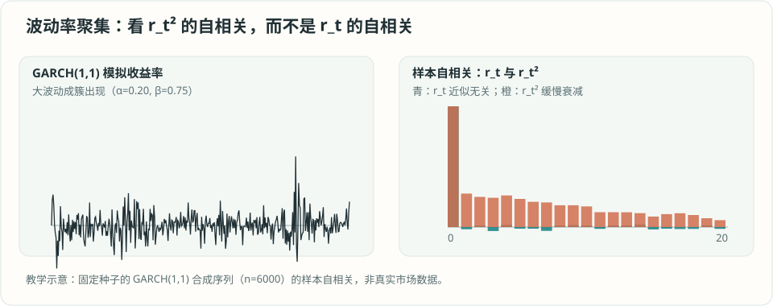
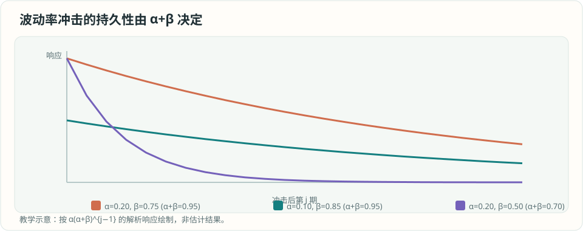
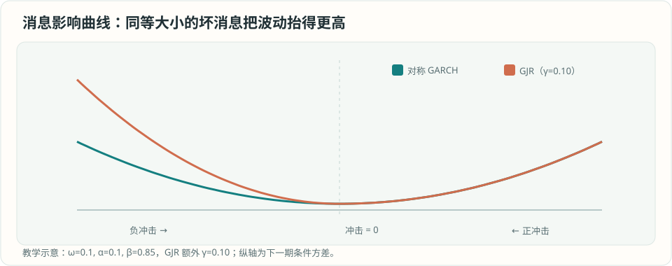

CHAPTER 15 / 28 · VOLATILITY
波动率建模：ARCH 与 GARCH
收益率本身难以预测，但它波动的幅度却可预测。本章把条件方差当作建模对象，讲清波动率聚集、ARCH/GARCH 的方程、平稳条件、杠杆效应，以及波动率预测与 VaR 的边界。
第 14 章的预测区间建立在“创新方差 σ² 恒定”之上。但金融收益率的方差会成簇变化：大波动后跟随大波动。此时固定方差假设失效，条件方差本身成为需要建模的对象。
先纠正一个常见误解：GARCH 预测的是波动率，不是方向。它给出的是未来收益的条件方差（风险），而不是涨跌方向；把 GARCH 当成“预测涨跌”的工具是误用。
01 · 收益率的典型事实
金融收益率有三个常被提到的特征：厚尾（极端值比正态更常见）、波动率聚集（大波动扎堆）、杠杆效应（负收益往往比同等正收益带来更大波动）。其中波动率聚集最容易检验：收益率本身几乎不相关，但收益率平方的自相关缓慢衰减。

rₜ 的样本自相关（近似为零），橙为 rₜ² 的样本自相关（缓慢衰减）——聚集性藏在平方的相关结构里。图为固定种子的合成序列，非真实市场数据。“近似不相关”应理解为线性不相关：可以没有线性自相关，却存在平方意义上的依赖。这也是为什么只看 rₜ 的 ACF 会漏掉波动率聚集。
02 · ARCH：条件方差依赖残差平方
ARCH（Engle, 1982）把条件方差写成过去残差平方的函数：昨天的冲击越大，今天的条件方差越高。收益方程写成 rₜ=μ+εₜ，其中 εₜ=σₜ zₜ，zₜ 为零均值单位方差的白噪声。
ARCH 的痛点是要刻画长期记忆就需要很大的 q，参数多且估计不稳。GARCH 用“方差自身的滞后项”来缓解这一问题。
03 · GARCH：一个滞后方差项换无限记忆
Bollerslev（1986）在方差方程里加入条件方差自身的滞后项 σ²_{t−1}，仅用三个参数就能表达无限长的记忆。

(α+β) 的幂衰减：α+β=0.95 的曲线衰减很慢（冲击持久），α+β=0.70 的曲线几期就基本消退。图为按解析响应绘制的教学示意。实务中 GARCH(1,1) 常被当作默认起点，因为它在很多金融序列上已能抓住主要动态。但“α+β 接近 1”不应被当成可自动验证的事实：它需要在具体样本上用极大似然估计并检查标准误。
04 · 平稳条件与长期方差
要让过程有意义的无条件方差、从而存在长期均值可回归，需要方差方程稳定。
这与第 03 章的平稳性概念衔接：这里要求平稳的是方差过程，而不是收益率水平。即便收益率近似白噪声，其方差仍可有一个稳定的长期水平供波动率向其回复。
05 · 杠杆效应与非对称模型
标准 GARCH 的方差方程对 ε² 对称，但市场常表现为负冲击比同等正冲击抬升更多波动。为了刻画这种不对称，研究者提出多种扩展。
| 模型 | 关键改动 | 注意 |
|---|---|---|
| EGARCH | 对 log σ²_t 建模，允许符号项 | 无需强制参数非负；参数含义基于对数尺度 |
| GJR-GARCH | 负残差时加一个额外项 γ ε²_{t−1} | γ>0 表示负冲击影响更大 |
| APARCH | 对方差引入幂变换与不对称 | 更灵活，但也更易过拟合 |

是否真的存在杠杆效应应用数据说话，并且要注意它与厚尾可能混淆：残差平方的 ACF 不能用来区分“不对称”与“单纯厚尾”，需要用带不对称项的模型比较与残差诊断。
06 · 波动率预测与 VaR 的局限
波动率预测最直接的应用是风险管理。Value-at-Risk（VaR）是给定置信水平下持有期的分位数损失：在正态假设下，它等于均值减去分位数乘以当期条件标准差。
必须明确 VaR 的三个局限：（1）依赖分布假设——若真实厚尾，正态 VaR 会系统性低估尾部损失；（2）VaR 不是一致风险度量，它不满足次可加性，组合分散不一定降低 VaR；（3）它只给一个分位点，不描述超过该点后的损失大小（需配合期望损失 ES）。因此应回测命中率并结合压力测试，而不能把 VaR 当作保证。
07 · 交互：α+β 与冲击持久性
固定 α=0.10，拖动滑块改变 β，看方差对冲击的响应序列。α+β 越接近 1，响应衰减越慢；当 α+β≥1 时，响应不再回落，方差方程失去平稳性。
本图表示已知参数下的理论响应，不是从真实数据估计出来的。
08 · Python：模拟 GARCH(1,1)
下面用 numpy 生成 GARCH(1,1) 序列（统一取无条件方差为 1），再用 Ljung–Box 检验对比收益与其平方的自相关。只依赖 numpy 与 statsmodels。
import numpy as np
from statsmodels.stats.diagnostic import acorr_ljungbox
rng = np.random.default_rng(15)
n = 4000
omega, alpha, beta = 1 - 0.2 - 0.75, 0.2, 0.75 # 无条件方差 = 1
z = rng.standard_normal(n)
sigma2 = np.zeros(n)
r = np.zeros(n)
sigma2[0] = omega / (1 - alpha - beta)
for t in range(1, n):
sigma2[t] = omega + alpha * r[t-1]**2 + beta * sigma2[t-1]
r[t] = np.sqrt(sigma2[t]) * z[t]
print("r 的 LB p:", acorr_ljungbox(r, lags=[10]).iloc[0, 1])
print("r² 的 LB p:", acorr_ljungbox(r**2, lags=[10]).iloc[0, 1])
print("持续参数 alpha+beta =", alpha + beta)
assert acorr_ljungbox(r**2, lags=[10]).iloc[0, 1] < 0.01
assert round(alpha + beta, 2) == 0.95预期结果：r 的 Ljung–Box p 值较大（不拒绝线性无关），而 r² 的 p 值极小（拒绝平方无关），这正是波动率聚集的指纹。这是合成数据上的结构验证，不构成对任何真实资产的结论；拟合真实数据通常用专门的 GARCH 库（如 Python 的 arch）做极大似然估计。
09 · 与多元序列的衔接
到这里，我们处理的都是单一序列。但现实系统中变量相互影响：利率与通胀、多个市场指数、供给与需求。下一章进入多元时间序列，学习向量自回归（VAR），它把“一个序列用自身滞后预测”扩展为“一组序列互相用彼此的滞后预测”。
进一步阅读与技术核对
引用指向模型定义与实现接口的官方资料。